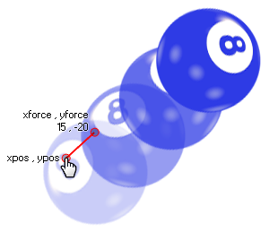

physics_apply_impulse(xpos, ypos, ximpulse, yimpulse)
| Argument | La description |
|---|---|
| xpos | La coordonnée x dans la pièce où l'impulsion sera appliquée |
| ypos | La coordonnée y dans la pièce où l'impulsion sera appliquée |
| ximpulse | la composante x du vecteur d'impulsion |
| yimpulse | la composante y du vecteur d'impulsion |
Retours: N / A
Non seulement vous pouvez appliquer la force et la gravité à un objet avec la physique dans GameMaker Studio 2 mais vous pouvez également appliquer une impulsion. Ceci est légèrement différent d'une force en ce sens que lorsqu'elle est appliquée, elle affecte immédiatement la vitesse, et potentiellement le couple (ou "spin") de l'objet, en particulier si le point choisi pour appliquer l'impulsion n'est pas aligné avec le centre de masse (note: le centre de masse n'est pas forcément le même que l'origine!). Voici une illustration:

Comme vous pouvez le voir, le joueur a cliqué sur la balle et cela lui a donné l'impulsion de se déplacer vers le coin supérieur droit, tournant comme il se doit. L'impulsion exacte est définie par le vecteur que nous obtenons des composantes ximpulse / yimpulse par rapport aux coordonnées xpos / ypos - ce qui signifie simplement que l'impulsion est calculée comme la distance de xpos / ypos à ximpulse / yimpulse en Newtons, et la direction est l'angle que nous obtenons de xpos / ypos à ximpulse / yimpulse.
NOTE: Le monde de la physique utilise des mètres pour tous ses calculs, et le ratio de pixels par mètre est défini dans l'éditeur de pièce ou en utilisant physics_world_create.
if mouse_check_button_pressed(mb_left)
{
with (place_meeting(mouse_x, mouse_y, all))
{
physics_apply_impulse(mouse_x,
mouse_y, -10 + irandom(20), -10 + irandom(20));
}
}
Le code ci-dessus appliquera une impulsion avec un vecteur aléatoire à une instance qui est à la position de la souris lorsque le bouton gauche est enfoncé.